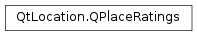

QPlaceRatings¶
Synopsis¶
Functions¶
- def
__eq__(other) - def
__ne__(other) - def
average() - def
count() - def
isEmpty() - def
maximum() - def
setAverage(average) - def
setCount(count) - def
setMaximum(max)
Detailed Description¶
The
PySide2.QtLocation.QPlaceRatingsclass holds rating information about a place.Rating information is used to describe how good a place is conceived to be. Typically this information is visualized as a number of stars. The
PySide2.QtLocation.QPlaceRatings.average()function returns an aggregated ratings value out of a possible maximum as given by thePySide2.QtLocation.QPlaceRatings.maximum()function.qDebug() << QString("This place rated ") + place.ratings().average() + "out of " + place.ratings().maximum() + "stars";
-
class
PySide2.QtLocation.QPlaceRatings¶ -
class
PySide2.QtLocation.QPlaceRatings(other) Parameters: other – PySide2.QtLocation.QPlaceRatingsConstructs a new ratings object.
Constructs a copy of
other.
-
PySide2.QtLocation.QPlaceRatings.average()¶ Return type: PySide2.QtCore.qrealReturns the average value of individual ratings.
-
PySide2.QtLocation.QPlaceRatings.count()¶ Return type: PySide2.QtCore.intReturns the total number of individual ratings.
-
PySide2.QtLocation.QPlaceRatings.isEmpty()¶ Return type: PySide2.QtCore.boolReturns true if all fields of the place ratings are 0; otherwise returns false.
-
PySide2.QtLocation.QPlaceRatings.maximum()¶ Return type: PySide2.QtCore.qrealReturns the maximum possible rating value.
-
PySide2.QtLocation.QPlaceRatings.__ne__(other)¶ Parameters: other – PySide2.QtLocation.QPlaceRatingsReturn type: PySide2.QtCore.boolReturns true if
otheris not equal to this ratings object, otherwise returns false.
-
PySide2.QtLocation.QPlaceRatings.__eq__(other)¶ Parameters: other – PySide2.QtLocation.QPlaceRatingsReturn type: PySide2.QtCore.boolReturns true if
otheris equal to this ratings object, otherwise returns false.
-
PySide2.QtLocation.QPlaceRatings.setAverage(average)¶ Parameters: average – PySide2.QtCore.qrealSets the
averagevalue of the ratings.
-
PySide2.QtLocation.QPlaceRatings.setCount(count)¶ Parameters: count – PySide2.QtCore.intSets the total number of individual ratings to
count.
-
PySide2.QtLocation.QPlaceRatings.setMaximum(max)¶ Parameters: max – PySide2.QtCore.qrealSets the maximum possible rating value to
max.
© 2018 The Qt Company Ltd. Documentation contributions included herein are the copyrights of their respective owners. The documentation provided herein is licensed under the terms of the GNU Free Documentation License version 1.3 as published by the Free Software Foundation. Qt and respective logos are trademarks of The Qt Company Ltd. in Finland and/or other countries worldwide. All other trademarks are property of their respective owners.